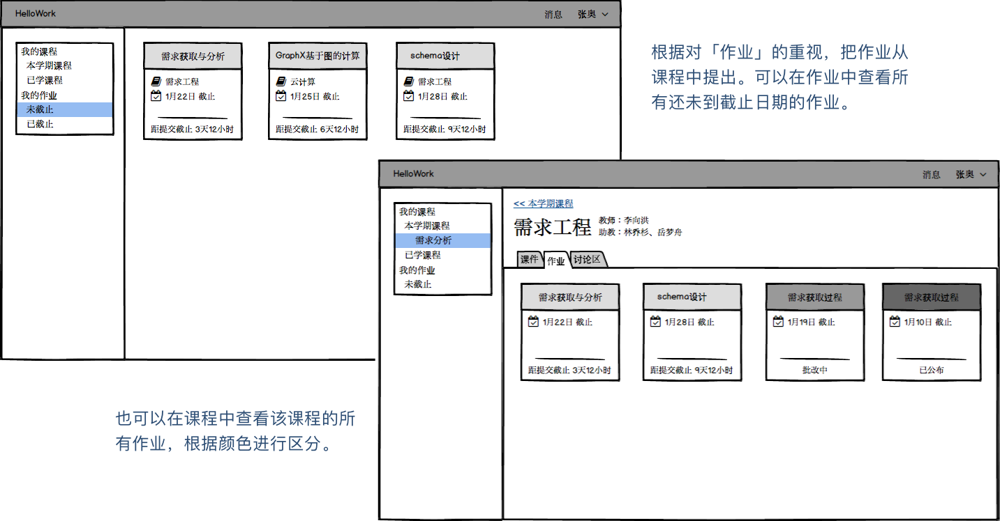
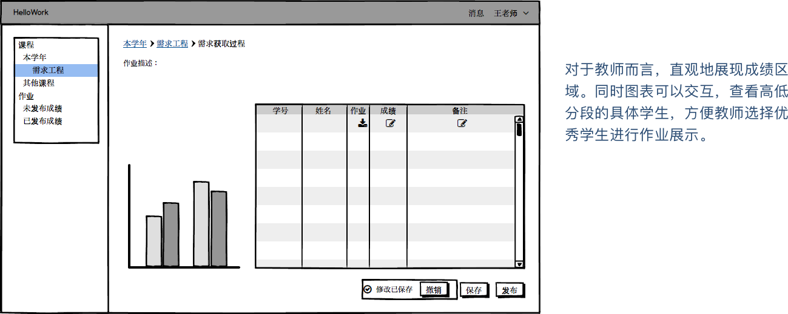

这是一款为软件专业设计的课程、作业管理系统。
学生可以在系统中查看自己的课程、相关的作业，提交作业并查看作业的成绩。助教可以下载作业，并登记成绩。教师可以发布作业，查看作业成绩的分布情况。
通过访谈，我们总结出人物角色和情景剧本，并以故事版的形式呈现。
我们之所以总结出 Persona 并描述情景剧本，是因为这是一个与我们相关程度较大的产品。我们可能有各自的使用习惯，或是身兼学生和助教两个角色，但是缺少对作业流程的详细理解。包括助教与教师的日常习惯、心理活动等。
通过故事板，我们对不同角色的目标有了更深的体会，对他们之间的交互行为也更加清楚。
学生：
有时候会错过布置的作业，想快速地知道布置了什么新的作业。
就某个作业想要联系教师的时候，经常要再去找他们的邮箱地址。有时候会被告诉要去问助教，但是又不知道助教是谁。
助教：
想要更方便地下载学生的作业、登记成绩。
有时候在批改下载好的作业时，没有网络，所以都是在 Excel 上登记成绩，最后集中发送给一个人上传。但是遇到要修改某几个学生的成绩就比较困难。
教师：
助教批改完后，因为有时候会布置几个作业，所以使用通讯工具告知时，难以知道是哪个作业。
有时候无法直观地看到学生的成绩分布，不能了解学生的掌握情况。
痛点 > 在现有的系统中，学生和助教想知道作业状态和日期的时候，需要进入作业详情才能知道作业的截止日期、批改情况、是否公布分数。为了知道不同作业的情况，需要在几个页面中来回切换，很麻烦。
解决方式 > 使用卡片式，将学生、助教最关心的作业状态进行直接呈现。同时，出于学生对作业的关心程度之重，我们在传统的以课程为中心的基础上，增加了 以作业为中心 的信息结构。对不同课程的作业布置情况，一目了然。
痛点 >
1. 对学生而言，不知道教师什么时候会布置作业，有时候教师只是在课上告知要布置作业，但是可能一段时间后再布置，那时候学生可能已经遗忘了；
2. 对助教而言，不知道什么时候可以批改作业；
3. 对教师而言，不知道助教批改好的作业是指哪个作业。
解决方式 >
1. 邮件通知：这是基于我们系统的特点，即学生邮箱作为账号登录。所以在触发不同的行为时，使用邮件对目标进行通知，同时附上作业链接，在阅读邮件时可以直接打开；
2. 系统内通知：作业成绩公布。比起作业布置时的通知，学生对于成绩发布的时间更不敏感，所以可以仅在系统内进行通知。
痛点 >
1. 一个课程的助教不止一位，他们会讨论分工后，对作业进行批改，如果能按助教之间的分工批量下载作业，会更加方便；
2. 不同的助教之间批改作业的进度不同，无法灵活登记成绩。
解决方式 >
1. 增加批量下载；
2. 可交互的表格和可导出/导入的成绩，方便助教各自上传成绩、线下批改、线上修改成绩，满足不同场景的需要。
痛点 > 教师在查看助教批改完的作业时，无法直观地看到成绩分布，不能直观地了解学生对该项作业的完成情况，或者助教的批改情况。
解决方式 > 使用可交互图表，可以查看不同区间的成绩分布情况，可以方便查看高分段同学，以进行课堂演示，也可以查看低分段同学，进行提醒。
